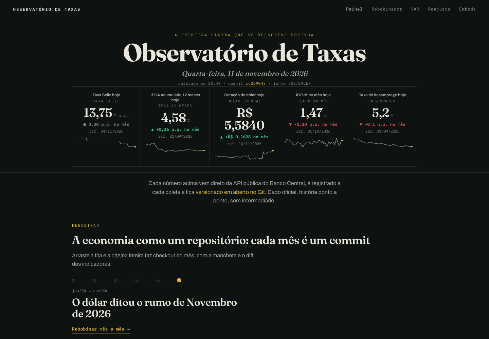
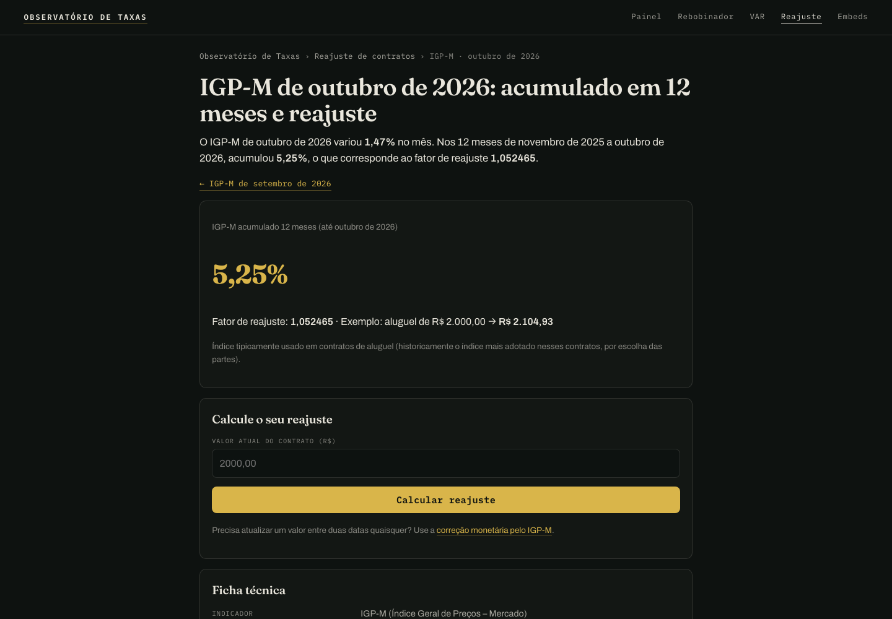
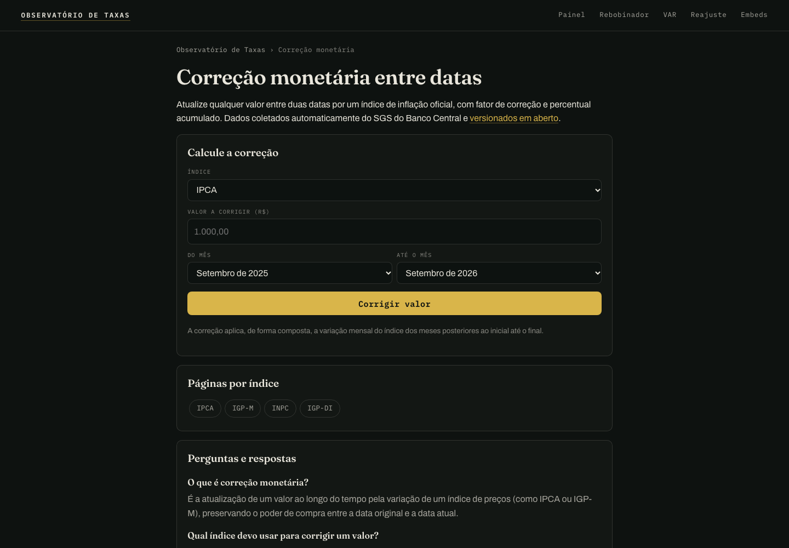
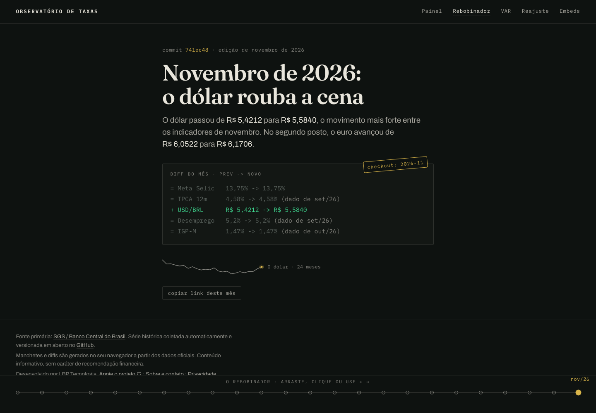

TRANSPARÊNCIA
O Observatório de Taxas é um projeto da própria LBP Tecnologia, que publica este blog. Não há
link de indicação neste texto. As afirmações técnicas foram conferidas em 11 de novembro de 2026
contra o código da branch main do repositório e contra o site publicado, e o que não
deu para verificar está dito no texto. Os números das capturas de tela mudam com cada coleta.
RESUMO EM 5 LINHAS
- O Observatório consulta 15 séries da API do SGS, do Banco Central, a cada 6 horas e guarda cada uma em JSON. O Git registra toda mudança de valor como um commit.
- O pipeline é Python rodando no GitHub Actions. O site é HTML estático gerado a partir dos JSONs e publicado pelo GitHub Pages, sem servidor próprio e sem banco de dados.
- O Banco Central distribui as séries, mas IPCA e INPC são produzidos pelo IBGE, e IGP-M e IGP-DI pela FGV IBRE. Cada página informa o produtor.
- Qualquer número pode ser conferido: o JSON público, a fórmula de composição e o commit em que o valor entrou ou foi revisado.
- O código é MIT. Os dados seguem os termos de cada produtor, e IBGE e FGV IBRE não são relicenciados.
NO config.yml
cron 0 */6 * * *
1º EM 15/06/2026
EM 11/11/2026
1. O problema: o número do mês existe, o caminho até ele se perde
Quem reajusta um aluguel de outubro precisa de um número só, o IGP-M acumulado em 12 meses até o mês certo.
Esse número sai de uma divulgação mensal, vira manchete e planilha, e dali em diante ninguém sabe mais de qual série ele veio, quais meses entraram na conta ou se o valor foi revisado depois. Selic, IPCA, IGP-M e dólar também vêm de instituições diferentes, em calendários diferentes, e costumam ser consultados em períodos específicos: o mês do reajuste, a data do contrato.
O Observatório de Taxas (abre em nova aba) organiza essas séries num lugar só, guarda cada coleta e oferece ferramentas gratuitas de consulta, de reajuste de contratos (abre em nova aba) e de correção monetária (abre em nova aba). É um projeto independente da LBP Tecnologia, com responsabilidade técnica de Leandro Borges Pereira, e o primeiro commit é de 15 de junho de 2026. O resto deste texto descreve como ele funciona por dentro, na ordem em que um dado atravessa o sistema.

2. A arquitetura
A decisão central foi não ter servidor. O Git faz o papel de banco de dados temporal, o GitHub Actions
é o motor e o GitHub Pages entrega os arquivos. O diagrama abaixo mostra o caminho completo, e o
trecho tracejado é o que o workflow monitor.yml executa.
fonte: .github/workflows/monitor.yml e README.md do repositório · o Pages publica a pasta /docs da branch main
Coleta: Python e a API do SGS
O config.yml lista as séries pelo código do SGS e aponta o endereço da API. Cada série
é uma entrada pequena:
# config.yml (trecho)
base_url: "https://api.bcb.gov.br/dados/serie/bcdata.sgs.{codigo}/dados"
series:
- codigo: 189
nome: "IGP-M - variação mensal (%)"
grupo: "Inflação"
- codigo: 433
nome: "IPCA - variação mensal (%)"
grupo: "Inflação"
O scripts/fetch.py lê esse arquivo e pede ao SGS os últimos 8 pontos de cada série.
Pedir mais de um ponto cobre execuções perdidas. Os pontos novos são fundidos por data com o que já
existe: uma data que já estava no arquivo recebe o valor mais recente, e é assim que as revisões
entram. Por escolha do projeto, uma série que falha não derruba o job, e as outras seguem.
O resultado fica em data/<codigo>_history.json, uma lista de pares
{data, valor} ordenada por data, ao lado de um arquivo com o último ponto e de um
manifesto (series.json). Os arquivos têm chaves ordenadas e indentação fixa, para que o
git diff mostre só o que mudou. Uma cópia vai para docs/data/, porque o
Pages só publica o que está dentro de docs/.
Geração: Python de novo, sem framework
Depois da coleta, o workflow roda geradores Python na sequência: build_pages.py escreve
as páginas de reajuste, build_correcao.py as de correção monetária,
render_index.py assa o boletim da página inicial e regenera o sitemap,
e outros scripts replicam a navegação, atualizam os hashes da política de segurança de conteúdo e
geram o card social com os números do dia. Quem edita o site edita os geradores em
scripts/, nunca o HTML em docs/reajuste/, porque ele é reescrito a cada coleta.
O último passo é o git add data/ docs/ seguido de um commit, mas só quando
git diff --cached não está vazio. Na maior parte das execuções nada mudou e nenhum
commit é criado.
Seis horas é a frequência de consulta
O cron roda a cada 6 horas (em UTC), e isso diz com que frequência o robô pergunta ao Banco Central. Não diz com que frequência saem números novos. O IPCA e o IGP-M são mensais, a Meta Selic muda em datas específicas e o dólar varia todo dia útil. O Observatório também não controla quanto tempo o SGS leva para refletir uma divulgação do produtor, e por isso a página de cada mês informa que a data de divulgação não é registrada e remete ao calendário de quem produz o índice.
Duas travas contra regressão
Nos pull requests, o validate.yml roda os testes, regenera as páginas e confere que o
resultado é igual ao que está commitado. Os testes incluem uma comparação entre o acumulado de 12
meses calculado pelo Observatório e a série oficial do IPCA em 12 meses (SGS 13522). Do lado do
job que escreve no repositório, as dependências são instaladas com --require-hashes e as
actions são fixadas por SHA de commit.
3. De onde vem cada número: produtor e distribuidor
O Banco Central distribui um conjunto grande de séries pelo SGS, mas produz só parte delas. A diferença importa na hora de citar. Escrever “IPCA, segundo o Banco Central” atribui ao distribuidor um número que o IBGE calcula.
| Indicador | Produzido por | Série no SGS |
|---|---|---|
| IPCA (mensal e 12 meses), INPC | IBGE | 433, 13522, 188 |
| Taxa de desocupação (PNAD Contínua) | IBGE | 24369 |
| IGP-M, IGP-DI | FGV IBRE | 189, 190 |
| Meta Selic, Selic anualizada, Selic acumulada no mês | Banco Central | 432, 1178, 4390 |
| TR e poupança (depósitos até 03/05/2012) | Banco Central | 226, 25 |
| Câmbio USD/BRL e EUR/BRL, IBC-Br | Banco Central | 1, 10813, 21619, 24363 |
fonte: README do repositório (abre em nova aba) e LICENSE-DADOS.md (abre em nova aba)
As referências primárias de cada produtor são a página do IPCA no IBGE (abre em nova aba), o portal da FGV IBRE para os IGPs (abre em nova aba) e o SGS do Banco Central (abre em nova aba). Na ficha técnica de cada página de mês, o Observatório informa o indicador, o produtor, a série do SGS onde o valor foi obtido, a competência e o critério de acumulação.
4. Os dados podem ser auditados
A promessa do projeto é que um visitante consiga ir do número na tela até o commit em que ele entrou. Vale percorrer o caminho com um caso real, o IGP-M de outubro de 2026.

Passo 1: refazer a conta
A página informa 1,47% no mês e 5,25% em 12 meses, com fator 1,052465. O acumulado é composto, o produto de (1 + variação mensal ÷ 100) nos 12 meses, menos 1. Os 12 valores estão no JSON público, e este script refaz a conta sem depender do site:
# recalcula o acumulado de 12 meses a partir do JSON público import json, urllib.request url = "https://observatoriodetaxas.tec.br/data/189_history.json" serie = json.load(urllib.request.urlopen(url)) fator = 1.0 for ponto in serie[-12:]: fator *= 1 + float(ponto["valor"]) / 100 print(serie[-12]["data"], serie[-1]["data"], round(fator, 6), round((fator - 1) * 100, 2)) # em 11/11/2026 a saída foi: 01/11/2025 01/10/2026 1.052465 5.25
A ficha técnica avisa de um limite desse método: como parte das variações mensais é publicada com duas casas, o resultado pode diferir em centésimos de ponto percentual do acumulado que a FGV IBRE divulga, calculado com números-índice. É uma diferença de arredondamento, e o Observatório escreve isso na própria página.
Passo 2: achar o commit
O valor 1,47 para a competência de outubro entrou no repositório no commit ad5e5e3 (abre em nova aba), feito pelo robô em 29 de outubro de 2026. Procurando a string do valor no histórico do arquivo, o Git devolve esse commit e mais nenhum:
$ git log -S'"valor": "1.47"' --oneline -- data/189_history.json
ad5e5e3 chore: snapshot 2026-10-29
O diff do arquivo da série nesse commit é este:
$ git show ad5e5e3 -- data/189_history.json commit ad5e5e3690d0b47ef3fe41302b7a9b4c4b578377 Author: github-actions[bot] Date: Thu Oct 29 11:57:00 2026 +0000 chore: snapshot 2026-10-29 { "data": "01/09/2026", "valor": "1.57" + }, + { + "data": "01/10/2026", + "valor": "1.47" } ]
Passo 3: ver uma revisão
Séries econômicas são revisadas. O IBC-Br (SGS 24363) é um exemplo no próprio histórico do projeto: em 16 de outubro de 2026 o SGS passou a devolver outros valores para meses que já estavam no arquivo, e a coleta sobrescreveu os antigos. O site mostra o valor atual, e o Git guarda o anterior no commit 9f43346 (abre em nova aba):
$ git show 9f43346 -- data/24363_history.json commit 9f433465cacebd0f1e88ddf11abcfc70653fffda Date: Fri Oct 16 15:45:25 2026 +0000 chore: snapshot 2026-10-16 "data": "01/01/2026", - "valor": "103.77761" + "valor": "103.91741" "data": "01/02/2026", - "valor": "106.76075" + "valor": "106.86101"
Para uma referência permanente a um dado, o projeto usa tags. O CITATION.cff do repositório sugere,
por exemplo, o arquivo data/189_history.json na tag v1.4.0, que não muda
mesmo quando a série avança. O recibo emitido pela ferramenta VAR, que descrevo abaixo, também traz o
commit dos dados usados na conta.
5. Ferramentas disponíveis
Todas as páginas abaixo respondem publicamente, sem cadastro, e foram abertas em 11/11/2026:
- Painel de indicadores (abre em nova aba). Meta Selic, IPCA em 12 meses, dólar, IGP-M e desemprego do dia, com variação, minigráficos e o commit da última coleta.
- Reajuste de contratos (abre em nova aba). Acumulado de 12 meses, fator e calculadora por índice (IPCA, INPC, IGP-M e IGP-DI), com uma página para cada mês desde dezembro de 2015.
- Correção monetária (abre em nova aba). Atualiza um valor entre dois meses pelo índice escolhido.
- VAR da Economia (abre em nova aba). Compara dois períodos de uma série, mostra a regra de cálculo e emite um recibo com link permanente.
- Rebobinar (abre em nova aba). A economia mês a mês, apresentada como linha do tempo de commits.
- Retransmissora (abre em nova aba). Gera o código para incorporar um gráfico que se atualiza com os dados do site.
- Dados abertos em JSON (abre em nova aba). O manifesto de séries e um arquivo de histórico por série.


6. Publicar para pessoas e para máquinas
Um observatório de dados é lido por gente com pressa e por programas. As escolhas abaixo servem aos dois públicos, e cada uma está no código do repositório.
- O resultado está no HTML. Em cada página de mês, o título, o H1, a resposta direta e a ficha técnica já vêm no arquivo. A calculadora usa JavaScript, e o conteúdo principal não depende dele.
- Uma URL por índice e por mês. Por exemplo,
/reajuste/igpm-outubro-2026/. São quatro índices com cerca de 130 meses cada, e uma URL publicada não muda de endereço quando a série avança. - Metadados que descrevem o que está visível. As páginas de mês trazem canonical próprio e dados estruturados de FAQPage e BreadcrumbList, e as perguntas e respostas do marcador são as mesmas que aparecem na página.
- Sitemap com
lastmodhonesto. A data de uma URL só muda quando a impressão digital do conteúdo muda, e esse estado fica versionado emdata/sitemap_lastmod.json. - JSON como fonte canônica. O
llms.txtdo site pede que se use os arquivos de/data/em vez de raspar o HTML. - Política de segurança sem
unsafe-inlinenos scripts. Os scripts inline são liberados por hash, e o workflow recalcula os hashes a cada coleta. - Aviso aos buscadores. Existe um workflow de IndexNow que informa só as URLs alteradas. Segundo o README, ele aguarda a primeira execução manual, então não afirmo que esteja em operação.
Sobre busca generativa, um registro e um cuidado. O relatório de IA do Bing Webmaster Tools, em cerca
de três meses até 11 de novembro de 2026, listava aproximadamente 2,1 mil citações de URLs do
Observatório em respostas de IA, e a área /reajuste/ concentrava mais de 80% das
citações do relatório exportado. Esses números foram exportados pelo responsável do projeto e estão
na linha de base do repositório (organic-discovery/BASELINE.md), e eu não os reproduzi.
Citação em resposta de IA não é visita nem clique. Este texto também não afirma que as decisões
acima causaram esse resultado: o próprio repositório trata a relação como hipótese a testar.
7. Código aberto e reutilização
O código está em github.com/iosbilario/observatorio-taxas (abre em nova aba). O README tem a instrução para rodar tudo localmente (Python 3.12 ou superior, um ambiente virtual e a sequência de scripts), e o guia do desenvolvedor detalha cada arquivo gerado. A licença do código e os direitos sobre os dados são assuntos separados:
| O quê | Termos |
|---|---|
| Código (scripts, testes, workflows, HTML, CSS e JS das páginas) | MIT |
| Séries do Banco Central | ODbL 1.0, com atribuição ao Banco Central do Brasil (SGS) |
| IPCA, INPC e desocupação (IBGE); IGP-M e IGP-DI (FGV IBRE) | Termos dos produtores. O Observatório não as relicencia |
| Textos explicativos do site | CC BY 4.0, com atribuição |
o arquivo do repositório registra que a ODbL foi conferida em 11/11/2026 pela API do portal de dados abertos em 7 séries, e que TR e EUR não foram localizadas na busca e seguem o mesmo tratamento · não é parecer jurídico
Na prática, quem usa o código pode copiar, adaptar e publicar. Quem reutiliza as séries precisa citar o
produtor e o canal, e quem pretende redistribuir IGP-M ou IGP-DI em escala ou com fins comerciais
deve falar antes com a FGV IBRE. O repositório também traz um CITATION.cff e um modelo de
atribuição pronto: “Fonte: IBGE (IPCA), via SGS/Banco Central do Brasil, série 433. Cálculo do
acumulado: Observatório de Taxas”.
8. O que a arquitetura não resolve
- A linha do tempo do Git começa em 15 de junho de 2026. As séries vêm desde 2015 por uma carga inicial. Os commits mostram quando o Observatório viu cada valor, e não o dia em que o produtor o divulgou.
- A fonte pode atrasar ou falhar. Se o SGS não responde para uma série, o job segue com as outras e a série fica com o último valor guardado.
- O acumulado pode diferir do oficial em centésimos, pelo motivo de arredondamento explicado na seção 4.
- É conteúdo informativo. O Observatório não é recomendação financeira, e quem reajusta um contrato deve conferir o índice que o contrato prevê.
9. Para explorar
O jeito mais rápido de avaliar o projeto é fazer a conta que descrevi: abra uma página de reajuste (abre em nova aba), rode o script sobre o JSON e procure o commit no repositório (abre em nova aba). Quem quiser testar a calculadora com um valor próprio pode usar a correção monetária (abre em nova aba). Se a conta não fechar ou a fonte estiver errada, o caminho é abrir uma issue com a URL da página, o código da série e a fonte oficial que mostra o valor correto.
Fontes e referências
- Repositório do projeto: github.com/iosbilario/observatorio-taxas (abre em nova aba), branch
main, conferido em 11/11/2026. - Workflow de coleta: monitor.yml (abre em nova aba). Coletor: scripts/fetch.py (abre em nova aba).
- Termos dos dados: LICENSE-DADOS.md (abre em nova aba). Citação: CITATION.cff (abre em nova aba).
- Banco Central do Brasil: Sistema Gerenciador de Séries Temporais (abre em nova aba) e Portal de Dados Abertos (abre em nova aba).
- IBGE: Índice Nacional de Preços ao Consumidor Amplo (abre em nova aba). Esse domínio bloqueia consultas automatizadas, então o endereço não pôde ser verificado por script.
- FGV IBRE: Índices Gerais de Preços (abre em nova aba).
- Licença: Open Database License (ODbL) 1.0 (abre em nova aba).
- Sobre o projeto: página Sobre do Observatório de Taxas (abre em nova aba).
Perguntas frequentes
De onde vêm os números do Observatório de Taxas?
Da API pública do SGS (Sistema Gerenciador de Séries Temporais) do Banco Central do Brasil. O SGS também redistribui séries de outros órgãos: IPCA e INPC são produzidos pelo IBGE, e IGP-M e IGP-DI pela FGV IBRE. Cada página do Observatório informa o produtor do índice e a série do SGS usada.
Com que frequência os dados são atualizados?
Um workflow do GitHub Actions consulta o SGS a cada 6 horas. Essa é a frequência de consulta. Os índices mensais só mudam quando o produtor divulga um valor novo ou revisado, e o repositório só recebe um commit quando algum arquivo muda.
Posso reutilizar os dados e o código?
O código está sob licença MIT. As séries do Banco Central seguem a ODbL 1.0, com atribuição. IPCA, INPC, IGP-M e IGP-DI não são relicenciados pelo Observatório e seguem os termos de IBGE e FGV IBRE, que devem ser citados. O arquivo LICENSE-DADOS.md do repositório detalha cada caso e não substitui parecer jurídico.
O Observatório de Taxas é gratuito?
Sim. O site é estático, gratuito e não exige cadastro. O projeto é independente e mantido pela LBP Tecnologia.
SOBRE O AUTOR
LBP Tecnologia
Consultoria de São Paulo que constrói plataformas de dados na AWS, painéis auditáveis e sistemas web para empresas. O responsável técnico do Observatório de Taxas é Leandro Borges Pereira, fundador da LBP. A tese da casa é prova, não promessa.